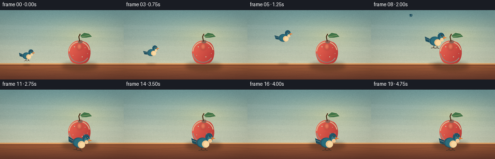

CODING AGENTS AS PIXEL WORLD MODELS
traex/DeepSeek-V4.1-Flash · dynamic_spatial_relationship_0039
点击播放 · 原生 RGB 像素
逐轮保存的候选
回放视频、检查图与代码变化。
每份候选均可单独播放。实际图片检查记录在下方工具轨迹中。
候选 01播放与检查图
点击播放 · 原生 RGB 像素

展开代码变化
--- 上一保存版本
+++ 本次保存版本
@@ -0,0 +1,307 @@
+from __future__ import annotations
+
+import math
+from pathlib import Path
+
+import numpy as np
+from PIL import Image, ImageDraw, ImageFilter
+
+import artifact_io
+
+
+W, H, N, FPS = 256, 144, 20, 4.0
+SS = 4
+SW, SH = W * SS, H * SS
+
+
+def mix(a, b, t):
+ return tuple(round(a[i] + (b[i] - a[i]) * t) for i in range(3))
+
+
+def smoothstep(t):
+ t = max(0.0, min(1.0, t))
+ return t * t * (3.0 - 2.0 * t)
+
+
+def bezier(p0, p1, p2, p3, t):
+ u = 1.0 - t
+ return (
+ u**3 * p0[0] + 3 * u * u * t * p1[0] + 3 * u * t * t * p2[0] + t**3 * p3[0],
+ u**3 * p0[1] + 3 * u * u * t * p1[1] + 3 * u * t * t * p2[1] + t**3 * p3[1],
+ )
+
+
+def make_background():
+ yy = np.linspace(0.0, 1.0, H, dtype=np.float32)[:, None]
+ xx = np.linspace(0.0, 1.0, W, dtype=np.float32)[None, :]
+ top = np.array([111, 151, 151], dtype=np.float32)
+ bottom = np.array([221, 211, 179], dtype=np.float32)
+ grad = np.broadcast_to(
+ top * (1.0 - yy[..., None]) + bottom * yy[..., None], (H, W, 3)
+ ).copy()
+
+ glow_x, glow_y, glow_r = 0.67, 0.36, 0.52
+ dist = np.sqrt((xx - glow_x) ** 2 + ((yy - glow_y) * 1.45) ** 2)
+ glow = np.clip(1.0 - dist / glow_r, 0.0, 1.0)[..., None] ** 1.65
+ grad += glow * np.array([35.0, 20.0, -4.0], dtype=np.float32)
+
+ # A quiet, painterly texture keeps the large background fields alive.
+ rng = np.random.default_rng(39)
+ noise = rng.normal(0.0, 2.2, (H, W, 1)).astype(np.float32)
+ grad = np.clip(grad + noise, 0, 255).astype(np.uint8)
+ bg = Image.fromarray(grad, "RGB").resize((SW, SH), Image.Resampling.BICUBIC)
+
+ d = ImageDraw.Draw(bg, "RGBA")
+ # Broad brush bands in the wall.
+ for y, color in [(34, (255, 255, 255, 10)), (56, (40, 92, 96, 9)),
+ (76, (255, 247, 220, 11)), (98, (54, 103, 104, 7))]:
+ d.line([(-20 * SS, y * SS), (278 * SS, (y + 6) * SS)],
+ fill=color, width=9 * SS)
+
+ # Table and its sunlit edge.
+ table_top = 111
+ for row in range(table_top, H):
+ t = (row - table_top) / (H - table_top)
+ color = mix((159, 91, 54), (102, 57, 43), t)
+ d.rectangle((0, row * SS, SW, (row + 1) * SS), fill=color)
+ d.rectangle((0, (table_top - 1) * SS, SW, (table_top + 2) * SS),
+ fill=(230, 167, 103, 210))
+ d.rectangle((0, (table_top + 2) * SS, SW, (table_top + 4) * SS),
+ fill=(92, 49, 39, 125))
+
+ # Sparse wood grain.
+ for y, bend, alpha in [(121, 3, 52), (127, -2, 35), (135, 4, 30), (141, -4, 22)]:
+ points = []
+ for x in range(-10, 267, 8):
+ points.append((x * SS, (y + bend * math.sin((x + 20) / 42)) * SS))
+ d.line(points, fill=(79, 43, 34, alpha), width=SS)
+
+ # Table shadow from the apple.
+ shadow = Image.new("RGBA", (SW, SH), (0, 0, 0, 0))
+ sd = ImageDraw.Draw(shadow)
+ sd.ellipse((128 * SS, 108 * SS, 202 * SS, 124 * SS), fill=(63, 39, 31, 105))
+ shadow = shadow.filter(ImageFilter.GaussianBlur(4 * SS))
+ bg = Image.alpha_composite(bg.convert("RGBA"), shadow)
+ return bg
+
+
+BACKGROUND = make_background()
+
+
+def draw_apple(base):
+ layer = Image.new("RGBA", (SW, SH), (0, 0, 0, 0))
+ d = ImageDraw.Draw(layer)
+ cx, cy = 164, 87
+ rx, ry = 24, 24
+
+ # Apple silhouette, with two softly unequal lobes.
+ mask = Image.new("L", (SW, SH), 0)
+ md = ImageDraw.Draw(mask)
+ md.ellipse(((cx - rx + 1) * SS, (cy - ry) * SS,
+ (cx + rx - 1) * SS, (cy + ry + 1) * SS), fill=255)
+ md.ellipse(((cx - rx + 2) * SS, (cy - ry + 4) * SS,
+ (cx + 3) * SS, (cy + ry - 1) * SS), fill=255)
+ md.ellipse(((cx - 3) * SS, (cy - ry + 3) * SS,
+ (cx + rx - 1) * SS, (cy + ry - 1) * SS), fill=255)
+
+ # Directional red gradient inside the fruit.
+ arr = np.zeros((SH, SW, 3), dtype=np.float32)
+ yy, xx = np.mgrid[0:SH, 0:SW]
+ u = np.clip((xx / SS - (cx - rx)) / (2 * rx), 0, 1)
+ v = np.clip((yy / SS - (cy - ry)) / (2 * ry), 0, 1)
+ light = np.clip(0.86 - 0.42 * u - 0.24 * v, 0, 1)
+ arr[..., 0] = 154 + 92 * light
+ arr[..., 1] = 38 + 74 * light
+ arr[..., 2] = 42 + 46 * light
+ fruit = Image.fromarray(np.clip(arr, 0, 255).astype(np.uint8), "RGB").convert("RGBA")
+ layer = Image.composite(fruit, layer, mask)
+ d = ImageDraw.Draw(layer, "RGBA")
+
+ # Warm reflected edge and a cool lower-left contour.
+ d.arc(((cx - rx + 2) * SS, (cy - ry + 2) * SS,
+ (cx + rx - 2) * SS, (cy + ry - 2) * SS),
+ start=184, end=348, fill=(255, 155, 98, 95), width=2 * SS)
+ d.arc(((cx - rx + 2) * SS, (cy - ry + 2) * SS,
+ (cx + rx - 2) * SS, (cy + ry - 2) * SS),
+ start=34, end=172, fill=(95, 28, 40, 92), width=2 * SS)
+
+ # Small natural speckles and soft specular highlight.
+ for x, y, r, a in [(154, 76, 1.0, 50), (176, 78, 0.7, 42),
+ (170, 97, 0.8, 45), (151, 94, 0.6, 38),
+ (181, 90, 0.5, 34)]:
+ d.ellipse(((x-r)*SS, (y-r)*SS, (x+r)*SS, (y+r)*SS),
+ fill=(255, 204, 132, a))
+ hi = Image.new("RGBA", (SW, SH), (0, 0, 0, 0))
+ hd = ImageDraw.Draw(hi)
+ hd.ellipse((159 * SS, 69 * SS, 169 * SS, 82 * SS), fill=(255, 185, 126, 86))
+ hi = hi.filter(ImageFilter.GaussianBlur(2.0 * SS))
+ layer = Image.alpha_composite(layer, Image.composite(hi, Image.new("RGBA", hi.size), mask))
+ d = ImageDraw.Draw(layer, "RGBA")
+
+ # Dimple, stem, and one crisp green leaf.
+ d.ellipse((161 * SS, 62 * SS, 171 * SS, 69 * SS), fill=(103, 37, 34, 155))
+ d.line([(165 * SS, 65 * SS), (163 * SS, 55 * SS), (166 * SS, 49 * SS)],
+ fill=(75, 48, 27, 255), width=2 * SS)
+ leaf = [(166, 53), (174, 47), (184, 49), (190, 55), (179, 57), (169, 57)]
+ d.polygon([(x * SS, y * SS) for x, y in leaf], fill=(64, 112, 70, 255))
+ d.line([(168 * SS, 55 * SS), (185 * SS, 52 * SS)],
+ fill=(142, 161, 91, 200), width=SS)
+ return Image.alpha_composite(base, layer)
+
+
+def rotated_ellipse_points(cx, cy, rx, ry, angle, steps=28):
+ pts = []
+ ca, sa = math.cos(angle), math.sin(angle)
+ for i in range(steps):
+ a = 2 * math.pi * i / steps
+ x, y = rx * math.cos(a), ry * math.sin(a)
+ pts.append(((cx + x * ca - y * sa) * SS, (cy + x * sa + y * ca) * SS))
+ return pts
+
+
+def draw_bird(base, x, y, scale, phase, flying, angle=0.0):
+ pad = 55
+ size = int(pad * 2 * SS)
+ ox = oy = pad * SS
+ layer = Image.new("RGBA", (size, size), (0, 0, 0, 0))
+ d = ImageDraw.Draw(layer, "RGBA")
+
+ # Coordinates are in final-image pixels, centered on the bird's torso.
+ def P(px, py):
+ return (ox + px * scale * SS, oy + py * scale * SS)
+
+ def box(x0, y0, x1, y1):
+ return (*P(x0, y0), *P(x1, y1))
+
+ # Feet are visible only when perched or landing.
+ if not flying or scale > 1.05:
+ d.line([P(-1, 7), P(-2, 14)], fill=(67, 48, 37, 255), width=max(1, round(1.2 * scale * SS)))
+ d.line([P(4, 7), P(5, 14)], fill=(67, 48, 37, 255), width=max(1, round(1.2 * scale * SS)))
+ d.line([P(-2, 14), P(-7, 15)], fill=(67, 48, 37, 255), width=max(1, round(1.1 * scale * SS)))
+ d.line([P(-2, 14), P(1, 15)], fill=(67, 48, 37, 255), width=max(1, round(1.1 * scale * SS)))
+ d.line([P(5, 14), P(1, 15)], fill=(67, 48, 37, 255), width=max(1, round(1.1 * scale * SS)))
+ d.line([P(5, 14), P(9, 15)], fill=(67, 48, 37, 255), width=max(1, round(1.1 * scale * SS)))
+
+ # Tail.
+ tail = [(-8, -2), (-20, -7), (-18, 2), (-8, 5)]
+ d.polygon([P(px, py) for px, py in tail], fill=(29, 75, 91, 255))
+ d.line([P(-9, 0), P(-18, -3)], fill=(96, 145, 146, 165),
+ width=max(1, round(0.8 * scale * SS)))
+
+ # Wing behind the torso. The flight silhouette opens upward and downward.
+ if flying:
+ wing_angle = -0.92 * math.sin(phase)
+ wing_rx, wing_ry = 11.5, 5.0
+ pts = rotated_ellipse_points(-2, -2, wing_rx, wing_ry, wing_angle)
+ pts = [(ox + (px - ox), oy + (py - oy)) for px, py in pts]
+ d.polygon(pts, fill=(24, 70, 88, 255))
+ edge = rotated_ellipse_points(-2, -2, wing_rx - 1.5, wing_ry - 1.2, wing_angle)
+ d.line(edge + [edge[0]], fill=(105, 159, 161, 145),
+ width=max(1, round(0.7 * scale * SS)))
+ else:
+ wing = [(-8, -4), (2, -6), (7, -1), (4, 5), (-6, 5)]
+ d.polygon([P(px, py) for px, py in wing], fill=(30, 79, 96, 255))
+ d.arc(box(-7, -5, 6, 5), 205, 344, fill=(109, 159, 159, 155),
+ width=max(1, round(0.8 * scale * SS)))
+ d.line([P(-4, -1), P(3, 2)], fill=(20, 58, 72, 120),
+ width=max(1, round(0.6 * scale * SS)))
+
+ # Torso and cream breast.
+ d.ellipse(box(-11, -8, 11, 10), fill=(33, 87, 105, 255))
+ d.ellipse(box(-8, -7, 11, 9), fill=(42, 106, 120, 255))
+ d.ellipse(box(-1, -3, 12, 10), fill=(232, 190, 135, 255))
+ d.ellipse(box(2, -1, 12, 9), fill=(244, 211, 157, 255))
+ d.arc(box(-11, -8, 11, 10), 94, 236, fill=(16, 54, 71, 150),
+ width=max(1, round(0.8 * scale * SS)))
+
+ # Head, throat, eye, and beak.
+ d.ellipse(box(5, -16, 18, -2), fill=(32, 84, 102, 255))
+ d.ellipse(box(9, -12, 18, 0), fill=(53, 116, 127, 255))
+ d.ellipse(box(10, -6, 17, 1), fill=(242, 204, 151, 230))
+ d.ellipse(box(12, -12.2, 15.1, -9.1), fill=(20, 26, 29, 255))
+ d.ellipse(box(13.0, -11.5, 14.2, -10.3), fill=(250, 240, 205, 255))
+ d.polygon([P(16, -9), P(23, -6.5), P(16, -4.2)], fill=(230, 126, 55, 255))
+ d.line([P(16, -7), P(22, -6.5)], fill=(154, 74, 43, 150),
+ width=max(1, round(0.55 * scale * SS)))
+
+ # A small crown feather catches the light.
+ d.line([P(8, -14), P(6, -17)], fill=(92, 150, 154, 210),
+ width=max(1, round(0.7 * scale * SS)))
+
+ if abs(angle) > 0.001:
+ layer = layer.rotate(math.degrees(angle), resample=Image.Resampling.BICUBIC,
+ center=(ox, oy))
+ px = round(x * SS - ox)
+ py = round(y * SS - oy)
+ base.alpha_composite(layer, dest=(px, py))
+ return base
+
+
+def add_bird_shadow(base, x, y, scale, flying):
+ shadow = Image.new("RGBA", (SW, SH), (0, 0, 0, 0))
+ d = ImageDraw.Draw(shadow)
+ shadow_y = 112 if flying else 114
+ spread = (1.0 if flying else 0.72) * scale
+ alpha = 54 if flying else 88
+ d.ellipse(((x - 13 * spread) * SS, (shadow_y - 2.5 * spread) * SS,
+ (x + 13 * spread) * SS, (shadow_y + 2.5 * spread) * SS),
+ fill=(66, 39, 30, alpha))
+ shadow = shadow.filter(ImageFilter.GaussianBlur((2.0 if flying else 1.4) * SS))
+ return Image.alpha_composite(base, shadow)
+
+
+def bird_pose(frame):
+ # Two settled beats, a fast arc, then a stable foreground landing.
+ if frame <= 2:
+ t = 0.0
+ elif frame >= 12:
+ t = 1.0
+ else:
+ t = smoothstep((frame - 2) / 9.0)
+
+ x, y = bezier((55, 94), (70, 28), (127, 31), (163, 109), t)
+ if frame <= 2:
+ x, y = 55, 94
+ if frame >= 12:
+ x, y = 163, 109
+
+ flying = 3 <= frame <= 11
+ scale = 0.78 + 0.38 * t
+ phase = (frame - 2) * math.pi * 0.92
+
+ # Pitch follows the visible arc, then levels out at the landing.
+ if frame < 3 or frame > 12:
+ angle = 0.0
+ else:
+ tt = min(1.0, max(0.0, (frame - 2) / 10.0))
+ angle = math.radians(13.0 * (1.0 - 2.0 * tt))
+ return x, y, scale, phase, flying, angle
+
+
+def render_frame(frame):
+ x, y, scale, phase, flying, angle = bird_pose(frame)
+ im = BACKGROUND.copy()
+ im = draw_apple(im)
+ im = add_bird_shadow(im, x, y, scale, flying)
+ im = draw_bird(im, x, y, scale, phase, flying, angle)
+ rgb = im.convert("RGB").resize((W, H), Image.Resampling.LANCZOS)
+
+ # A gentle vignette and film grain unify the painted elements.
+ arr = np.asarray(rgb, dtype=np.float32)
+ yy, xx = np.mgrid[0:H, 0:W]
+ nx = (xx - W / 2) / (W / 2)
+ ny = (yy - H / 2) / (H / 2)
+ vignette = np.clip(1.06 - 0.09 * (nx * nx + ny * ny), 0.92, 1.03)
+ arr *= vignette[..., None]
+ rng = np.random.default_rng(1000 + frame)
+ arr += rng.normal(0.0, 0.7, (H, W, 1))
+ return np.clip(arr, 0, 255).astype(np.uint8)
+
+
+def main():
+ frames = np.stack([render_frame(i) for i in range(N)])
+ artifact_io.save(frames, Path(__file__).resolve().parent)
+
+
+if __name__ == "__main__":
+ main()
候选 02播放与检查图
点击播放 · 原生 RGB 像素

展开代码变化
--- 上一保存版本
+++ 本次保存版本
@@ -49,7 +49,7 @@
rng = np.random.default_rng(39)
noise = rng.normal(0.0, 2.2, (H, W, 1)).astype(np.float32)
grad = np.clip(grad + noise, 0, 255).astype(np.uint8)
- bg = Image.fromarray(grad, "RGB").resize((SW, SH), Image.Resampling.BICUBIC)
+ bg = Image.fromarray(grad).resize((SW, SH), Image.Resampling.BICUBIC)
d = ImageDraw.Draw(bg, "RGBA")
# Broad brush bands in the wall.
@@ -113,7 +113,7 @@
arr[..., 0] = 154 + 92 * light
arr[..., 1] = 38 + 74 * light
arr[..., 2] = 42 + 46 * light
- fruit = Image.fromarray(np.clip(arr, 0, 255).astype(np.uint8), "RGB").convert("RGBA")
+ fruit = Image.fromarray(np.clip(arr, 0, 255).astype(np.uint8)).convert("RGBA")
layer = Image.composite(fruit, layer, mask)
d = ImageDraw.Draw(layer, "RGBA")
@@ -259,11 +259,11 @@
else:
t = smoothstep((frame - 2) / 9.0)
- x, y = bezier((55, 94), (70, 28), (127, 31), (163, 109), t)
+ x, y = bezier((55, 94), (70, 28), (127, 31), (163, 99), t)
if frame <= 2:
x, y = 55, 94
if frame >= 12:
- x, y = 163, 109
+ x, y = 163, 99
flying = 3 <= frame <= 11
scale = 0.78 + 0.38 * t
候选 03播放与检查图
可观测工具轨迹
实际执行的命令与返回图片。
命令 1exit 0
/bin/bash -c "pwd && rg --files -g 'prompt.txt' -g 'GENERATION_RULES.md' -g 'task_spec.json' -g '"'!node_modules'"'"
命令 2exit 0
/bin/bash -c 'ls -la'
命令 3exit 0
/bin/bash -c 'cat prompt.txt'
命令 4exit 0
/bin/bash -c 'cat GENERATION_RULES.md'
命令 5exit 0
/bin/bash -c 'cat task_spec.json'
命令 6exit 0
/bin/bash -c "sed -n '1,240p' artifact_io.py"
命令 7exit 0
/bin/bash -c "sed -n '1,240p' player_template.html"
命令 8exit 1
/bin/bash -c 'python generate.py'
命令 9exit 1
/bin/bash -c 'python generate.py'
命令 10exit 0
/bin/bash -c 'rg -n "rotated_ellipse_points|alpha_composite" generate.py'
命令 11exit 0
/bin/bash -c 'python generate.py'
命令 12exit 0
/bin/bash -c "python - <<'PY'
from PIL import Image
im=Image.open('inspection.png')
print(im.size)
im.resize((1536,660), Image.Resampling.NEAREST).save('.tmp/inspection_big.png')
PY"命令 13exit 1
/bin/bash -c 'which chafa || which viu || which jp2 || which img2txt'
命令 14exit 0
/bin/bash -c "python - <<'PY'
from PIL import Image
for i in [0,5,9,12,19]:
im=Image.open(f'frames/{i:02d}.png')
im.resize((768,432), Image.Resampling.NEAREST).save(f'.tmp/frame_{i:02d}.png')
PY"命令 15exit 0
/bin/bash -c "python - <<'PY'
from PIL import Image
import numpy as np
pal=np.array([[111,151,151],[221,211,179],[150,95,65],[200,70,55],[40,95,110],[240,200,150],[70,115,70],[50,40,30]])
chars='~.wRBCGx'
for fi in [0,5,9,12,19]:
a=np.asarray(Image.open(f'frames/{fi:02d}.png').resize((64,36),Image.Resampling.NEAREST)).astype(int)
d=((a[:,:,None,:]-pal[None,None,:,:])**2).sum(3)
lab=d.argmin(2)
print('\\nFRAME',fi)
for row in lab:
print(''.join(chars[i] for i in row))
PY"命令 16exit 0
/bin/bash -c "python - <<'PY'
import generate
for i in range(20):
x,y,s,p,f,a=generate.bird_pose(i)
print(f'{i:02d}: x={x:6.1f} y={y:6.1f} scale={s:.2f} flying={f} angle={a*180/3.14159:5.1f}')
PY"命令 17exit 0
/bin/bash -c 'python generate.py'
命令 18exit 0
/bin/bash -c "python - <<'PY'
from pathlib import Path
from PIL import Image
import numpy as np
import json
p=Path('.')
spec=json.loads((p/'task_spec.json').read_text())
arr=np.load(p/'pixels.npz')['pixels']
print('npz',arr.shape,arr.dtype,'range',int(arr.min()),int(arr.max()))
print('frames',len(list((p/'frames').glob('*.png'))),'index', (p/'index.html').stat().st_size)
im=Image.open(p/'inspection.png')
print('inspection',im.size)
# Verify exact expected frames and final foreground overlap with apple center region.
frames=[np.asarray(Image.open(p/'frames'/f'{i:02d}.png')) for i in range(20)]
print('unique frames',len({f.tobytes() for f in frames}))
print('final blue pixels in apple center box', int(((frames[-1][72:102,151:177,2] > frames[-1][72:102,151:177,0]+20)).sum()))
PY"命令 19exit 0
/bin/bash -c 'python -m py_compile generate.py && ls -lh generate.py index.html pixels.npz inspection.png transition_check.png'
命令 20exit 0
/bin/bash -c "python - <<'PY'
from PIL import Image
import numpy as np
frames=[np.asarray(Image.open(f'frames/{i:02d}.png')) for i in range(20)]
for i in [0,6,10,12,19]:
a=frames[i]
blue=(a[:,:,2]>a[:,:,0]+15)&(a[:,:,1]>a[:,:,0]+8)
ys,xs=np.where(blue)
# Exclude upper-wall tint using the bird's chroma/saturation.
keep=(a[ys,xs,2]-a[ys,xs,0]>25)&(ys>35)
xs,ys=xs[keep],ys[keep]
print(i, 'bird-ish bbox', (int(xs.min()),int(ys.min()),int(xs.max()),int(ys.max())), 'n',len(xs))
PY"命令 21exit 0
/bin/bash -c 'git status --short'
保存候选 3 份；完成命令 21 次；可验证图片返回 0 张。原始 API 响应与完整日志保留在本地。